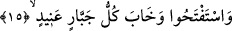
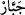
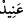

havâss ise Allah’a erme/vuslat makamını kaçırmaktan korkarlar.”
“Ve tehdîdimden sakınan kimselere mahsusdur.” Azâbım ve cezam konusundaki
tehdidimden korkanlar için mutlaka gerçekleşecektir. Yâni, bu iki korkuyu bir araya
getiren takvâ sâhiplerinin hakkıdır. Nitekim Allah Teâlâ “Güzel sonuç takvâ
sâhiplerinindir.” (el-A‘râf, 7/128) buyurmuştur.
15. (Peygamberler) fetih (yardım) istediler (Allah da verdi). Her inatçı zorba
perişan oldu.
Peygamberler, düşmanlarına ya da kâfirlere karşı Allah’tan zafer ve fetih için
“yardım istediler ve her inatçı zorba perişan oldu.” Yâni yardım istedikleri zaman
peygamberlere yardım edildi. Peygamberler istediklerine nâil olup zafere ulaştı ve
kurtuldu. Azâbın inmesiyle birlikte onların inatçı kavimleri de hüsrana uğrayıp helâk
oldu.
Âyette zikredilen “perişanlık (haybet)”, istenen şeyden mahrûm olmak değil, mutlak
mahrûmiyet mânâsındadır.
Şâyet fetih isteğinde bulunanların kâfirler olduğu farz edilirse o zaman ‘perişanlık’, bu
fetih taleplerinin peşinden istedikleri şeylerden de mahrum oldukları anlamına gelmiş
olur ki bu, çok daha müessirdir. Çünkü kendileri için bekledikleri fetih kendilerine
değil, düşmanları olan peygamberlere nasîb olmuştur. Bu da istenen şeye nâil olamamak
mânâsındaki perişanlığın zirvesidir. Ayrıca sırf onları kötülemek ve zorbalık ve
inatçılıklarını tescillemek maksadıyla ‘her inatçı zorba perişan oldu!’ buyrulmuştur.
Yoksa böyle buyrulması, onlardan bâzılarının böyle olmadığı ve onlara perişanlık
isâbet etmediği anlamında değildir.
“__WORD__ Cebbâr (zorba)” Allah’ın emirlerine karşı boyun bükmeyip kendini büyük
gören, kendini O’na itâat etmeyecek kadar yüce kabûl eden ve insanları kendi istediği
şekilde davranmaya mecbûr eden kimsedir. “__WORD__ Anîd (inatçı)” ise “Lâ ilâhe illallah”
demekten yüz çeviren yahut da Allah’tan uzak duran, hak ehline düşmanlık eden
kimsedir.
Kâşifî şöyle der: “Cenâb-ı Hakk’a karşı inat eden veya O’na tâat ve ibâdetten yüz
çeviren herkes azabdan kurtulmaktan ümîdini kesti.”
İmam Demîrî Hayâtü’l-hayevân’da şöyle der: “Mâverdî Edebü’d-dünyâ ve’d-dîn
adlı eserinde anlatır ki: Abdülmelik’in oğlu Yezid’in oğlu Velid bir gün Mushaf’tan
tefe’ül etti. Karşısına “Yardım istediler ve her inatçı zorba perişan oldu.” âyeti çıktı.
Bunun üzerine Velid Mushaf’ı parçaladı ve şöyle demeye başladı: